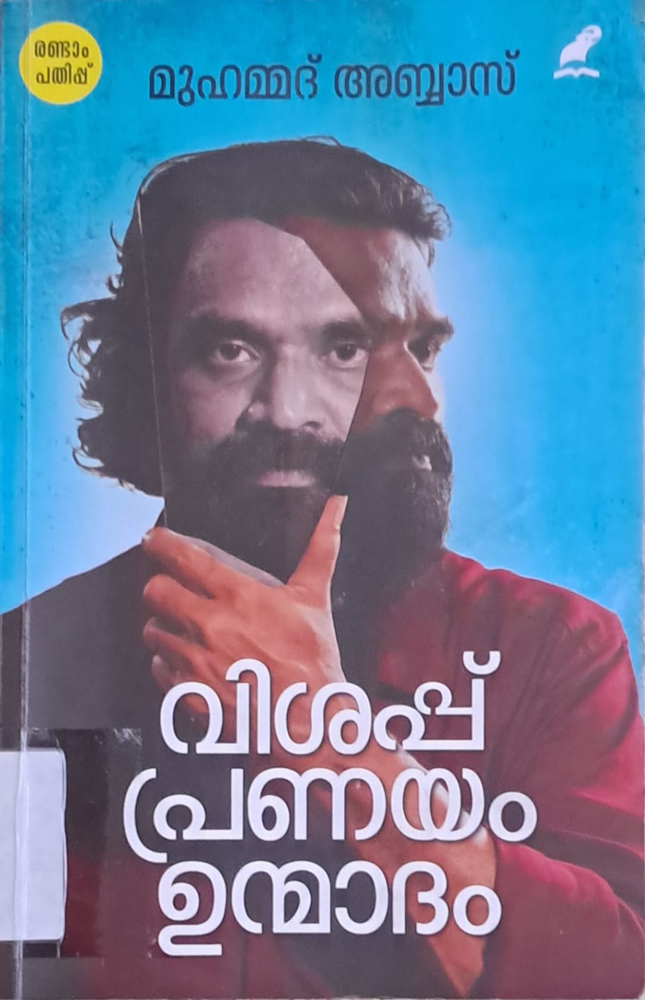

Author: മുഹമ്മദ് അബ്ബാസ്
Review by: ആൽബിൻ ജോർജ്
മുമ്പ് കേട്ടറിഞ്ഞ് വായിക്കണമെന്ന് കരുതിയ പുസ്തകം സഹപ്രവർത്തകനായ ജയേഷ് മാഷ്ടെ കൈയിൽ കണ്ട് ചോയിച്ച് വാങ്ങി വീട്ടിലെത്തി വൈകുന്നേര ചായക്കൊപ്പം വായിക്കാനെടുത്തു ... വായിച്ച് പോകവേ ചായ മറന്നു. ഇടയ്ക്കിടെ കണ്ണ് നനഞ്ഞു. ഓരോ താളിലും ചുട്ട് പൊള്ളിക്കുന്ന ജീവിതാനുഭവങ്ങൾ. വിശപ്പും പ്രണയവും ഉൻമാദവും എല്ലാം തീവ്രാനുഭവങ്ങളുടെ ചൂട് ഉള്ളവ. മനുഷ്യൻ എന്നത് എത്രമാത്രം നിസഹായതയാണ് എന്ന ചിന്തയെ ആഴപ്പെടുത്തിയ അനുഭവ കുറിപ്പുകൾ... വായിച്ച് തീർന്ന് കഴിയുമ്പോ മുമ്പിൽ ആറി തണുത്ത ചായ... ഉള്ളിൽ വായനയുടെ പൊള്ളൽ. ഉള്ള് പൊള്ളിച്ച പുസ്തകവും ആറി പോയ ചായയും ഇവിടെ പങ്ക് വെക്കുന്നു. ചായക്കിടയിൽ വായിക്കാവുന്ന ഒരു പുസ്തകമല്ലിത്... അല്ലെങ്കിലും ജീവിതം എന്നത് ആസ്വാദനം മാത്രമല്ലല്ലോ.